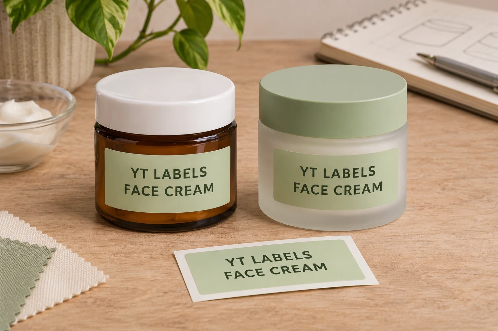
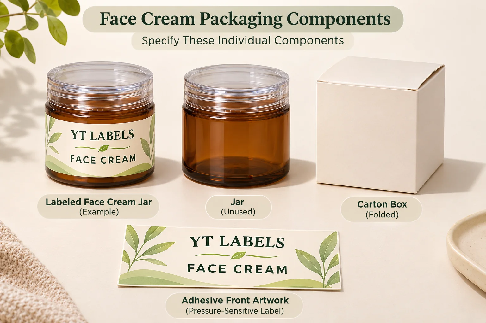

Use the manufacturer's standard packaging route when its actual bottle or jar, label area and available decoration can meet your product requirements. Specify your own packaging components when the standard offer cannot support something essential and the manufacturer agrees to accept the proposed pack. Confirm the whole arrangement before placing a print order for either route.
Packaging control starts before anyone buys printed labels. A manufacturer may offer an existing container shape and label setup while allowing custom artwork. Another proposal may ask the brand to specify and supply selected components. Compare the exact pieces being bought, their owners and the remaining checks.

Ask what the manufacturer already includes
Request an itemized description of the starting package: container reference, closure, label area, printed labels if included and any outer carton. Ask to see which parts are fixed and which can change. A manufacturer may provide a stock bottle and allow your label design, but the quote still needs to identify the artwork and construction it will support.
SaraWest's wholesale and private-label FAQ describes both stock packaging and review of customer-supplied components under documented requirements. That is one actual manufacturer's workflow. Confirm the manufacturer's own available choices for your product. YT Labels' cosmetic offering covers the printed label part of the project.
Choose one proposed pack from each route and identify which pieces the manufacturer supplies, which your brand supplies and which still need technical acknowledgment. Do not compare a finished package quote with a print-only quote before including the components, application and logistics that differ.
Decide which differences are worth controlling yourself
| Input | Manufacturer's standard pack | Brand-specified pack or component |
|---|---|---|
| Product and container | Confirm the exact pack offered and which choices stay open. | Provide proposed component references and ask which must be qualified. |
| Decoration | Identify the usable label panel, allowed layout choices and what print work is included. | Confirm the panel, proposed label construction and who accepts the printed format. |
| Order and custody | State the quantity and timing the package offer actually covers. | Assign component purchasing, delivery, receipt and responsibility for usable counts. |
| Approval | Check a representative assembled pack for the approved scope. | Agree component acceptance, the representative assembled sample and remaining tests or decisions. |
List the requirements the brand cannot give up, then mark the differences of each proposal. Ask the manufacturer to state what it has accepted and what is still open. Compare the actual quote and schedule only once the scope can deliver the same intended finished pack.

Make the smallest change that meets the brief
Suppose a hypothetical first cream range needs a distinct front design but its manufacturer already offers a suitable glass jar. Ask whether a different printed label on the standard jar can meet the approved brief. Confirm the label panel and artwork scope before ordering. A new bottle or jar is an additional choice only if the standard format cannot cover the requirement.
Another brand may need a specific established jar for a matching range. It can ask the manufacturer whether that reference and closure are accepted for filling and label application, and which sample and incoming records it needs. This route can give the brand more control over a named component and adds coordination work before launch.
Hold any irreversible print commitment when the proposed bottle, acceptance of buyer-supplied components or usable label area is unconfirmed. Once the component route is settled, decide who places the label order and what proof is needed for that accepted pack.
Request the label portion for an identified pack
Send the manufacturer's accepted container reference, dimensions, chosen label area, proposed quantities by design and input from the application site. State which packaging items are still pending and request the label construction and quote once they are known. The form prepares a message. Send drawings and photos through email or WhatsApp.
Prepare a packaging scope inquiry